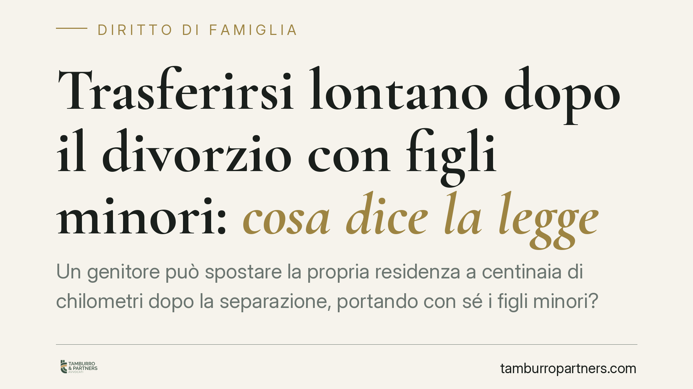

Trasferirsi lontano dopo il divorzio con figli minori: cosa dice la legge
Un genitore può spostare la propria residenza a centinaia di chilometri dopo la separazione, portando con sé i figli minori? La libertà di circolazione è un diritto costituzionale, ma incontra un limite preciso nel diritto del minore a mantenere un rapporto equilibrato con entrambi i genitori. Il punto di equilibrio si costruisce caso per caso.

Il fatto
La questione del trasferimento del genitore collocatario — quello presso cui il figlio vive prevalentemente — è tra le più frequenti nel contenzioso familiare. Una recente pronuncia di merito ha ribadito un principio ormai consolidato: il genitore resta libero di trasferirsi anche dopo il divorzio, senza divieti preventivi né sanzioni automatiche. La scelta, però, non è insindacabile: va bilanciata con l'interesse del minore e deve fondarsi su ragioni serie.
Inquadramento normativo
Il punto di partenza è l'art. 16 della Costituzione, che riconosce a ogni cittadino la libertà di circolare e soggiornare liberamente sul territorio nazionale. Nessun giudice può imporre a un genitore di restare in una determinata città.
Questa libertà, tuttavia, si intreccia con l'art. 337-ter del codice civile, che sancisce il principio di bigenitorialità. È importante chiarire un equivoco diffuso: la bigenitorialità non è un diritto del genitore, ma un diritto del figlio. Il minore ha diritto a mantenere un rapporto equilibrato e continuativo con la madre e con il padre, a ricevere cura, educazione e istruzione da entrambi e a conservare rapporti significativi con i parenti di ciascun ramo familiare.
Sul tema la Corte di Cassazione ha elaborato un orientamento costante: il trasferimento del genitore collocatario non è di per sé vietato, ma quando incide in modo rilevante sull'esercizio del diritto di visita dell'altro genitore impone una nuova valutazione dell'assetto dell'affidamento. Il giudice non tutela la comodità dell'adulto, bensì la stabilità del minore, valutando in concreto se lo spostamento risponda o meno al suo interesse.
Cosa cambia in concreto
Il bilanciamento non produce risposte automatiche. Il giudice pondera una serie di elementi:
- La distanza tra la nuova residenza e quella dell'altro genitore, perché incide sulla frequenza e sulla qualità degli incontri.
- L'età del minore: le esigenze di un bambino in età prescolare sono diverse da quelle di un adolescente ormai autonomo negli spostamenti.
- Il radicamento scolastico e sociale: cambiare scuola, amicizie e attività ha un peso rilevante nella valutazione dell'interesse del figlio.
- La serietà delle ragioni del trasferimento: un'opportunità di lavoro stabile, il ricongiungimento con la famiglia d'origine o esigenze di salute pesano diversamente rispetto a scelte prive di giustificazione concreta.
Quando il trasferimento è ritenuto compatibile con l'interesse del minore, non resta cristallizzato il precedente calendario di visita. Il giudice procede alla rimodulazione delle modalità di frequentazione: tipicamente si riducono gli incontri infrasettimanali a favore di periodi più lunghi e concentrati (fine settimana prolungati, vacanze scolastiche), così da preservare la continuità del rapporto nonostante la maggiore distanza.
Un profilo spesso sottovalutato è quello economico. La lontananza genera costi di viaggio — trasporti, eventuali pernottamenti — che vanno ripartiti tra i genitori. Il giudice può addossare in tutto o in parte tali oneri al genitore che, con il proprio trasferimento, ha reso più gravoso l'esercizio del diritto di visita dell'altro.
Cosa fare in concreto
- È opportuno documentare per tempo le ragioni oggettive del trasferimento (contratto di lavoro, motivi di salute, situazione abitativa), perché la serietà delle motivazioni incide sulla valutazione del giudice.
- La prassi suggerisce di comunicare il trasferimento all'altro genitore prima di realizzarlo, non a fatto compiuto: la trasparenza è spesso valorizzata nelle decisioni.
- È consigliabile predisporre una proposta concreta di rimodulazione del calendario di visita, che dimostri l'intenzione di preservare il rapporto con l'altro genitore.
- In assenza di accordo, la via è il ricorso per la revisione delle condizioni di affidamento, che consente al giudice di adeguare l'assetto alla nuova situazione.
- È utile stimare in anticipo i costi di viaggio e prospettarne una ripartizione ragionevole, per prevenire il contenzioso sul punto.
Ogni situazione presenta variabili specifiche che possono spostare l'esito del bilanciamento. La valutazione, per sua natura, resta ancorata al caso concreto.
Disclaimer
Contributo informativo a cura di Tamburro & Partners Avvocati - Avv. Giuseppe Tamburro. Non costituisce parere legale.
Ogni famiglia ha il suo equilibrio.
Separazione, divorzio, affidamento, assegno: se vuoi un confronto riservato su una specifica situazione, scrivi allo studio. Ti rispondiamo entro un giorno lavorativo.